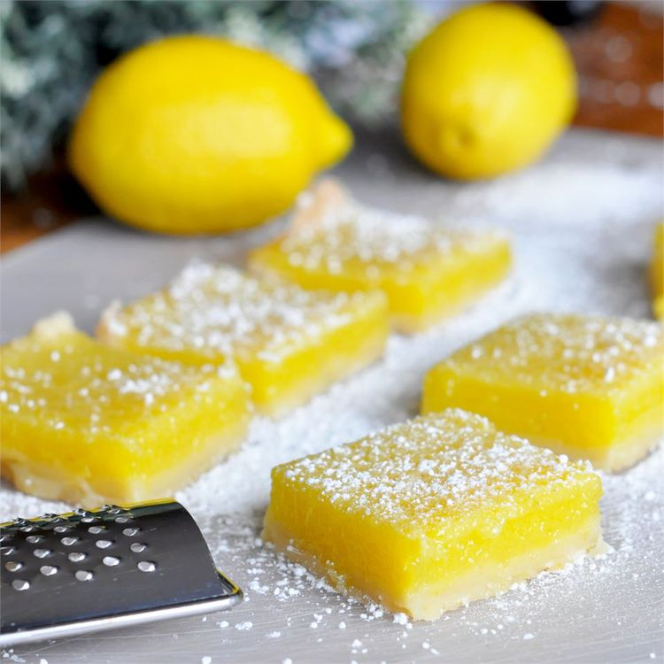

Home
Lemon Pie Bars

Lemon Pie Bars
This is a really easy recipe that my mom made before the lemon bar 'rage'
was on! Thick-skinned lemons work the best. I suggest using real butter
and eggs, I've tried using eggbeaters--nowhere near as good!
Ingredients
- 2 ¼ cups all-purpose flour
- ½ cup confectioners' sugar
- 1 cup butter, softened
- 4 eggs
- 1 ½ cups white sugar
- ½ cup lemon juice
- 1 tablespoon lemon zest
Steps
- Preheat oven to 350 degrees F (175 degrees C).
-
Mix 2 cups of flour and confectioner's sugar together. Cut in the butter
or margarine. Mix well until the dough resembles pie dough consistency.
Press the dough into a 9x13 inch baking pan.
- Bake 15 to 20 minutes or until golden brown.
-
Beat together eggs, sugar, 4 tablespoons flour, lemon juice and lemon
rind for at least 1 minute. Pour the mixture over the baked crust.
-
Bake the bars another 20 minutes, or until the lemon topping has set.
Sprinkle with confectioner's sugar when cooled.